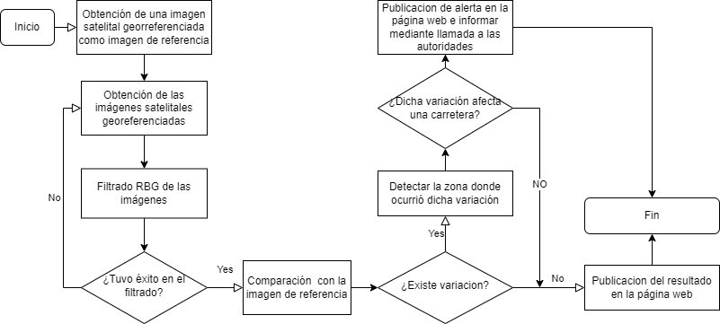

Diseño de un sistema de monitoreo y alerta de los factores ambientales que afectan las carreteras en las regiones San Martin y Amazonas
Las carreteras de muchas de las regiones de la selva peruana son propensas a sufrir fenómenos naturales debido a su condicion geográfica. Estos fenómenos no son atendidos rápidamente ya que la falta de monitoreo dificulta el conocimiento del estado de las carreteras.
En este trabajo se pretende desarrollar un sistema de monitoreo y alerta temprana en las zonas de carreteras propensas a sufrir fenómenos naturales.
CAPITULO I
En el Perú los fenómenos naturales como los derrumbes, los huaycos y los desbordes de ríos son una de las causas principales de los accidentes de tránsito en carreteras, según el Observatorio Nacional de Seguridad Vial, en el primer semestre del 2021, el 2% de los factores viales causantes de accidentes de tránsito fueron el factor infraestructura y entorno vial, los cuales hacen un total de 1104 siniestros.
Debido a que es necesario tener un sistema de información que permita conocer el estado de las vías nacionales, desarrollamos un algoritmo que permita procesar imagenes satelitales.
OBJETIVO GENERAL
Diseñar e implementar un sistema informático que brinde información sobre el estado de las vías de transporte con mayor incidencia de bloqueo o inhabilitación a causa de factores ambientales en las regiones Amazonas y San Martin.
CAPITULO II
AMBIENTE DE ESTUDIO
Este proyecto analiza imagenes de las carreteras de las regiones de Amazonas y San Martin.
De acuerdo con el Sistema Interconectado Nacional de Carreteras, SINAC, la red vial de Amazonas tiene 855 Km de vía nacional, 754.3 Km de vía departamental y 1651 Km de vía vecinal. Las vías no pavimentadas representan un 72.92 % del total disponible en la región.
CAPITULO III
PROCESAMIENTO DIGITAL DE IMAGENES MEDIANTE FILTRADO RGB
La segmentación de imágenes permite dividir una imagen en segmentos, regiones u objetos individuales, que tienen algún rasgo en común y así es más fácil la clasificación de los objetos presentes en la imagen. Estos datos pueden serán útiles en nuestro trabajo ya que nos permitirá definir bordes, formas y diferenciar tonalidades.
El procesado se realiza en la plataforma Júpiter notebook, extensión del software Anaconda, en el cual se permite la ejecución de códigos en lenguajes de programación como es el caso de Python.
.
DIAGRAMA DE FLUJO DEL ALGORITMO DESARROLLADO
La imagen a analizar proviene de un satelite georeferenciado. Luego se filtra y dependiendo del resultado se compara con a imagen de referencia. Si hay una variacion, se emite una alerta. Si no, no se emite ninguna. Finalmente las imagenes son cargadas a la pagina web.
CAPITULO IV
COSTOS DE OPERACION
Para el trabajo destinado a el sistema de monitoreo y vigilancia, nosotros como estudiantes hemos sido lo más ahorrativos posibles, usando solo plataformas de libre acceso y programas que sean de código abierto. Para un posterior diseño se emplearán más equipos y materiales los cuales se detallan a continuación

.
CONCLUSIONES
• Las imágenes que se utilicen deben ser de tipo satelital, estas se deben obtener de plataformas que brinden imágenes con la mejor calidad posible para que la ejecución del código sea exitosa.
• No es factible el uso de imágenes de radar a pesar de ser plataformas que otorgan gran información y son dedicadas para teledetección, puesto a que no entregan información que el proyecto requiere sino más bien que la utilización de estas es para áreas con mayor extensión geográfica a comparación de carreteras.
• Las imágenes de satélite sentinel y Lansat a pesar de tener frecuencias de actualización de entre 5 y 16 días, no es suficiente para tener un sistema que requiera la información del estado de las carreteras actualizada y así mismo haría que se contara con la plataforma desactualizada.
• Las imágenes de satélite sentinel y Lansat permiten descargas en bandas de las imágenes satelitales, para el análisis de estos se requiere software que consume gran capacidad de recursos de hadware, haciendo que sea un limitante para computadoras con bajos recursos de hadware, tomando como alternativa solamente la descarga de imágenes de zonas específicas.
• Para ejecutar el proyecto y tener periodos de actualización mucho mas frecuentes se debería de tener un satélite dedicado a la captura de imágenes de zonas con mayor potencial de ocurrencia de desastres naturales.